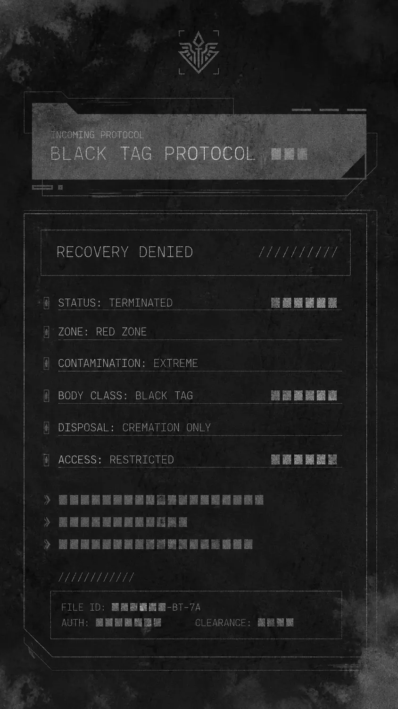
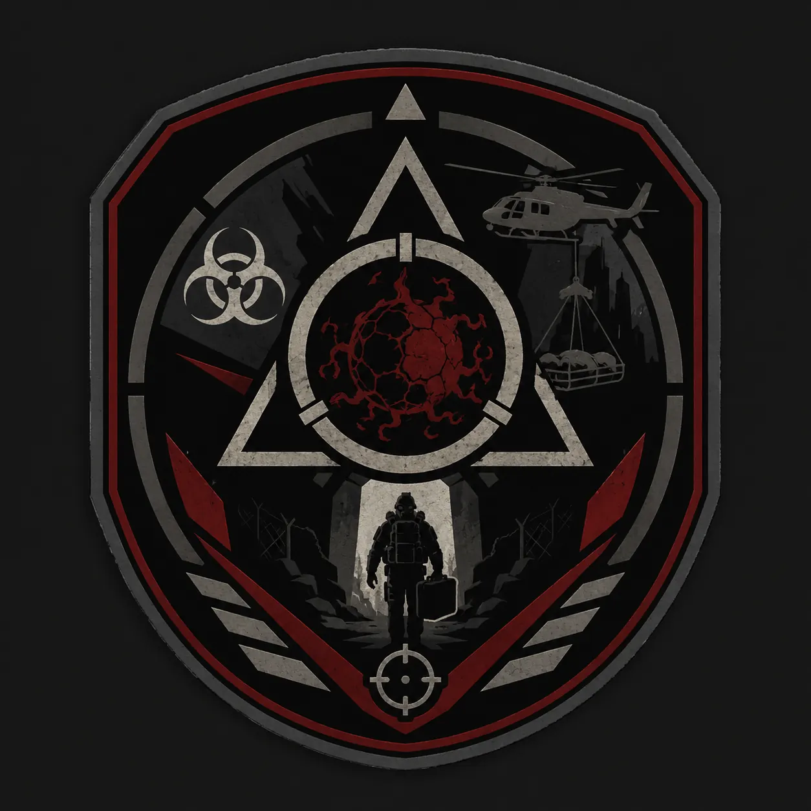
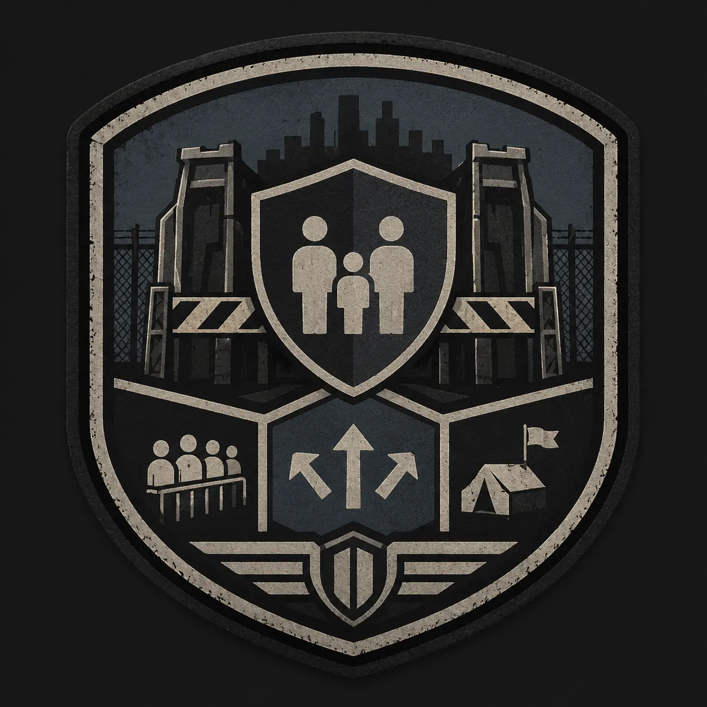
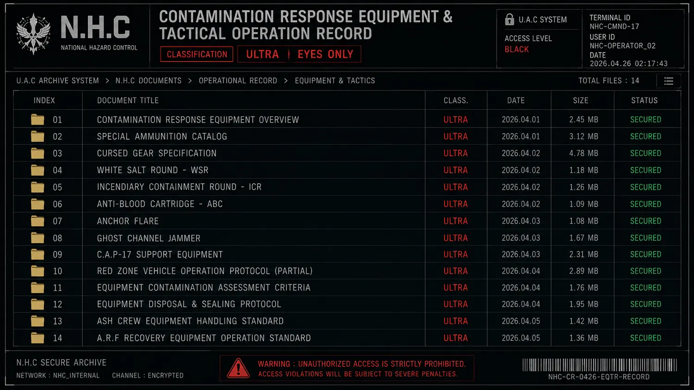

기록 열람
N.H.C 현장 작전·장비·봉쇄 규정 문서
NHC_Manual_891219
N.H.C 레드존 현장 운용 기준을 기록면 단위로 분할한 내부 문서이다.
기록면을 선택해서 열람하십시오.
N.H.C 현장 작전·장비·봉쇄 규정 문서
- 분류: 레드존 현장 규칙, 회수 제한, 장비 운용, 봉쇄 붕괴 대응
- 중심 기관: N.H.C / A.R.F / C.P.D / Ash Crew / U.A.C
- 기능: N.H.C가 레드존에서 무엇을 지키고, 무엇을 회수하지 않으며, 언제 봉쇄를 우선해야 하는지 정한다.
본 문서는 U.A.C 전체 기술 백과가 아니라 N.H.C 현장 인원이 따라야 할 작전 규정이다. 장비와 차량은 현장 운용에 필요한 범위에서만 기록한다.
N.H.C 생존 규칙

N.H.C가 가장 먼저 배워야 하는 것은 싸우는 법이 아니라 돌아오는 법이다. 아래 규칙은 반복된 작전 실패와 전사 기록에서 만들어졌다.
- 혼자 진입하지 않는다.
- 사망자 무전에 응답하지 않는다.
- 같은 골목과 같은 복도가 반복되면 전진하지 않는다.
- 붉은 문이 열려 있으면 통과하지 않는다.
- 헬멧 기록과 실제 위치가 다르면 즉시 후퇴한다.
- C.P.D 보호 구역에서 무장 교전을 시작하지 않는다.
- A.R.F 회수 루트 위에 화력을 유도하지 않는다.
- Ash Crew 처리 구역에 불필요하게 접근하지 않는다.
블랙 태그 기준

블랙 태그는 회수 금지 대상, 오염 사체, 위험 장비, 판정 불가 기록물을 분류하기 위한 현장 기준이다. 목적은 사망자를 데려오는 것이 아니라 죽은 것이 다시 돌아오지 못하게 막는 것이다.
- 화이트 태그: 회수 가능한 사망자나 장비.
- 그레이 태그: 제한 조건 아래 회수 가능한 대상.
- 레드 태그: 회수 위험 대상. 봉인 회수 또는 재분류 필요.
- 블랙 태그: 회수 금지 대상. 현장 봉쇄, 소각, 완전 격리 우선.
- 판정 불가 태그: 시간 오염, 위장 개체 의심, 위치 불일치 발생 시 사용.
같은 사체가 여러 위치에서 발견되거나, 회수 백 내부에서 움직임이 감지되거나, 혈문 중심부에서 발견된 대상은 즉시 블랙 태그 검토 대상이다.
회수·소각 연계 절차
A.R.F, C.P.D, Ash Crew는 같은 현장에 들어가더라도 이동 루트와 목적이 다르다.
- A.R.F: 생존자, 장비, 샘플, 기록 매체를 회수한다.
- C.P.D: 민간인 대피, 피난민 분리, 귀환자 선별을 담당한다.
- Ash Crew: 오염 사체, 블랙 태그 대상, 오염된 장비를 봉인·소각한다.
- A.R.F 회수 루트와 Ash Crew 소각 루트는 겹치지 않는다.
- C.P.D 보호 구역은 N.H.C 교전 구역과 분리한다.
장비·시설 운용

N.H.C 장비와 시설은 전투만을 위한 것이 아니라 오염 측정, 통신 차단, 시간 기준 유지, 민간인 분리, 회수물 봉인, 사체 처리까지 포함한다.
장비
- 오염 측정기: 구역, 인간, 개체, 장비의 오염도를 측정한다.
- 현장 동기화 단말기: 작전 기준 시간과 대원 위치를 동기화한다.
- 오염 무전 차단기: 오염된 통신 신호를 차단한다.
- 시간 표식탄: 시간 오염 구역에서 철수 방향을 표시한다.
- 블랙 태그 봉인 백: 회수 금지 대상의 접촉과 확산을 막는다.
- 휴대 소각기: 타락 개체 잔해와 오염된 장비를 현장에서 소각한다.
시설
- 외곽 검문소: C.P.D가 민간인 이동을 통제하는 지점.
- 민간인 대기 구역: 피난민 임시 대기 구역.
- 선별 검사 천막: 오염 반응과 신원 기록을 확인하는 검사 구역.
- 작전 대기 구역: 무장, 탄약, 진입 명령이 준비되는 지점.
- 회수 구역: 회수품과 생존자가 들어오는 지점.
- 소각 구역: 사체와 오염된 장비를 처리하는 구역.
- 지휘 컨테이너: U.A.C, N.H.C, S.I.D가 작전 정보를 공유하는 임시 지휘소.
- 격리실: 레드 태그 대상과 귀환자를 임시 격리하는 공간.
차량·특수탄약 운용

특수탄약
- 백염 제압탄: 낮은 단계의 오염 개체와 잔류물에 사용하는 제압탄.
- 소각 봉쇄탄: 소각과 확산 차단을 동시에 목적으로 하는 탄약.
- 대혈액 탄약: 혈액성 변이 개체의 재생 반응을 억제하는 탄약.
- 고정 표식탄: 시간 오염 지역에서 위치 기준을 남기는 표식탄.
- 문 억제 장약: 혈문 주변 잔류 오염을 줄이는 폭발식 장비.
차량
- 정찰 차량: 전방 확인과 위험 구역 접근에 사용된다.
- 장갑 수송차: N.H.C 병력 수송에 사용된다.
- 회수 차량: A.R.F 회수 작전에 사용된다.
- 소각 운반차: Ash Crew 소각 장비와 사체 처리 장비를 운반한다.
- C.P.D 대피버스: 민간인 대피와 보호소 이동에 사용된다.
레드존 내부 차량은 단독 운행하지 않는다. 오염 차량은 수리 후 재투입하지 않고 격리 또는 폐기한다.
봉쇄선 붕괴 코드
봉쇄선 붕괴 코드는 봉쇄선이 무너질 때 사용하는 긴급 분류 기준이다. 단순 침입 경보가 아니라 타락 개체, 민간인, 시간 오염, 혈문, 블랙 태그 영향이 봉쇄선 밖으로 번질 가능성을 표시한다.
- 0단계: 오경보.
- 1단계: 미세 누출. 오염 신호나 혈흔이 외곽에서 확인됨.
- 2단계: 개체 접촉. 타락 개체 또는 오염 개체가 봉쇄선과 접촉함.
- 3단계: 민간인 돌파. 귀환자 또는 감염 의심자가 통제선을 넘음.
- 4단계: 문 현상. 혈문 또는 유사 문 현상이 발생함.
- 5단계: 죽은 시간 변동. 봉쇄선 주변 시간이 뒤틀림.
- 6단계: 블랙 태그 확산. 회수 금지 대상의 영향이 외곽으로 번짐.
- 7단계: 블랙존화 위험. 구역 자체가 블랙존 전환 위험에 들어감.
작전 실패 후 기록 회수 절차
작전 실패, 대량 전사, 블랙존화 위험, 민간인 손실, 비인가 연구 개입과 관련된 기록은 U.A.C가 회수·봉인한다. 이 절차는 N.H.C 현장 인원이 기록을 임의 삭제하기 위한 권한이 아니다.
- 헬멧 기록, 무전 로그, 작전 지도, 사망자 명단을 회수한다.
- 오염 무전 감염 파일은 재생 금지 상태로 봉인한다.
- F.H.C 샘플 기록과 아마리온 회수 영상은 별도 보안 저장소로 이동한다.
- 블랙 태그 대상과 연결된 기록 매체는 Ash Crew 처리 대상이 될 수 있다.
- 말소된 기록이 죽은 시간 구역에서 반복 재생될 경우, 해당 지점은 재진입 금지로 분류한다.
국외 레드존 대응 기준

국외 또는 국경 인접 레드존 발생 시 N.H.C는 U.A.C 국제 대응 절차에 따라 제한적으로 작전권을 공유한다. 이 기준은 장비, 귀환자, 기록 매체, 연구 샘플의 이동까지 통제한다.
- 지역 레드 사건: 한 도시나 제한된 지역에서 발생한 레드존 사건.
- 국가급 레드 위기: 국가 내부 여러 지역으로 오염이 확산되는 상황.
- 국경 오염 이동: 오염자, 장비, 신호, 타락 개체 흔적이 국경을 넘은 상황.
- 국제 블랙존 위험: 블랙존화 가능성이 국제 단위로 확산되는 상황.